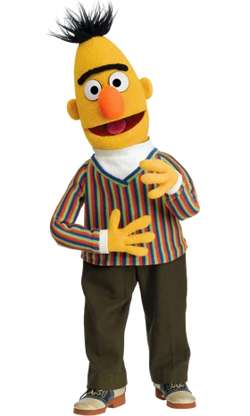

From Text Corpus to Classified Data
Eva-Maria Vogel, Christian Pipal, Morgan Wack, Frank Esser | University of Zurich
INFLUPOL Workshop · 17.03.2026 · Day 2 · 10:30–12:00
| # | Topic |
|---|---|
| 1 | What to do with text data: use cases and what to measure |
| 2 | Codebook development |
| 3 | LLMs as coders: prompt design, validation, pitfalls |
| 4 | Supervised ML pipelines: transformers and fine-tuning |
| 5 | Decision framework: which method for which task |
| Q&A |
Content analysis is not just about measuring variables for regression. It also shapes who is in your sample.
Use case 1: Measure substantive variables
Use case 2: Identify PSMIs in the first place
Most high-reach influencers are not political. PSMIs are a small subset.
Practical implication: A follower-count-based sample will contain mostly non-PSMIs. Content analysis on political posting rate is how you filter.
Content analysis also opens a snowball sampling channel.
The idea: Once you have a set of known PSMIs, go through the @mentions and replies in their posts.
Content analysis does double duty: it measures variables AND identifies who belongs in the sample.
Easier to automate
Harder to automate
Method choice should match construct difficulty. A dictionary works for topic detection, but will fail for populism or credibility. Using an LLM for simple tasks like topic detection is costly.
| Construct | Complexity | Keyword | ML | LLM | Multimodal? |
|---|---|---|---|---|---|
| Political / not political | Low | ✓ | ✓ | ✓ | Partial |
| Issue topic | Low | ✓ | ✓ | ✓ | No |
| Partisan direction | Medium | △ | ✓ | ✓ | No |
| Sentiment | Medium | △ | ✓ | ✓ | No |
| Framing | High | ✗ | ✓ | ✓ | No |
| Populism | Very high | ✗ | ✓* | ✓ | No |
| Credibility: expertise | Medium | ✗ | ✓ | ✓ | Partial |
| Credibility: benevolence | Medium | ✗ | ✓ | ✓ | No |
| Credibility: consistency | Medium | ✗ | ✓ | ✓ | No |
| Credibility: ordinariness | High | ✗ | △ | △ | Yes |
| Credibility: immediacy | High | ✗ | △ | △ | Yes |
✓ = works well ✓ = works but overkill △ = limited ✗ = fails * = needs in-domain training data
Before you automate anything, you need a precise answer to:
What exactly counts as an instance of this construct?
The method can change (dictionary, ML, GPT-4, human coder), but this question must be answered first. A classifier learns from your codebook. If the codebook is bad, the classifier learns to replicate a bad measurement.
This applies equally to LLM annotation. The prompt IS the codebook. Vague prompts produce vague classifications.
Budget 3–5 pilot rounds before a codebook for a complex construct stabilizes. Do not save time at this step.
| Metric | Problem |
|---|---|
| Percent agreement | Inflated by chance. Never use alone. |
| Cohen’s kappa | Kappa paradox: penalizes agreement on rare categories |
| Scott’s pi | Less flexible across measurement levels |
| Krippendorff’s alpha | Default recommendation. Works with 2+ coders, all levels, missing data. |
Thresholds (Lombard et al., 2002)
If after 5 rounds α is still below 0.67, the construct may not be measurable from this content type alone.
| Unit | Best for |
|---|---|
| Full post (all layers) | Populism, framing, credibility |
| Caption + transcript | Partisan direction, sentiment |
| Caption only | Topic tagging |
| Sentence | Claim-level analysis |
Our approach: Concatenate all text layers into one document per post. LLM and human coders see the same evidence.
Key constraint: Code the influencer’s own voice, not content they repost or react to.
Definition (our codebook)
Politics refers to activities associated with making decisions in groups, power relations between individuals, and distribution of resources or status. Includes both formal politics (institutions, candidates, policies) and lifestyle-based politics (social justice, health, equality, culture, ethics).
The formal / lifestyle distinction matters:
| Type | Example |
|---|---|
| Formal | “New healthcare proposal would cut premiums by 15%” |
| Lifestyle | “We need to talk about what diet culture is doing to women’s bodies” |
For the US context, four binary variables per post:
| Variable | Question |
|---|---|
| Pro-Trump/Republicans | Does the post promote or compliment Trump or the Republican Party? |
| Anti-Trump/Republicans | Does the post criticize Trump or the Republican Party? |
| Pro-Harris/Democrats | Does the post promote or compliment Harris or the Democratic Party? |
| Anti-Harris/Democrats | Does the post criticize Harris or the Democratic Party? |
Why four binary variables, not one scale?
A post can be simultaneously anti-Trump and anti-Harris. A single left-right scale would lose this information. Binary variables preserve the full pattern.
Five dimensions derived from source credibility theory:
| Dimension | Core question |
|---|---|
| Expertise | Would a viewer think this platform provides expert knowledge? |
| Benevolence | Is the influencer personally expressing care for others’ wellbeing? |
| Consistency | Do they claim personal persistence despite opposition or cost? |
| Ordinariness | Do they present as a regular, non-elite person? |
| Immediacy | Does the post convey unfiltered, raw, unmediated access? |
Ordinariness and Immediacy rely heavily on visual and audio signals: home setting, casual clothes, voice breaking. These are systematically underdetected by text-only classifiers. We will see this in the performance data.
Gilardi, Alizadeh & Kubli (2023), PNAS
Compared GPT-3.5 zero-shot annotation vs. MTurk crowd workers across political text tasks (stance, framing, topic, relevance).
GPT-3.5 matched or exceeded crowd workers at a fraction of the cost.
Read this critically:
| Approach | Data needed | Best when |
|---|---|---|
| Zero-shot | 0 labels | Clear task, well-known construct, rapid prototyping |
| Few-shot | 3–8 examples | Better than zero-shot with minimal effort. Try this first. |
Few-shot consistently beats zero-shot. Put 2–3 positive examples, 2–3 negative examples, and 1 borderline case in your prompt before concluding LLM annotation does not work for your task.
Few-shot examples = your codebook decision rules in example form. The same logic applies as in manual coding: anchor points for ambiguous cases.
Data leakage: Never take your few-shot examples from the validation set. If any item in your prompt appears in the set you use to evaluate the LLM, you are testing on training data. Draw examples from a separate pilot set or from codebook development rounds.
You are an expert coder for a political communication study.
CODEBOOK:
[Full variable definitions, boundary rules, and examples]
EXAMPLES OF CORRECT CLASSIFICATIONS:
[3–8 labeled examples in JSON format]
---
POST TO CLASSIFY:
(Username given first. Use it to assess whether the influencer
refers to themselves, important for credibility variables.)
"""
{POST TEXT}
"""
---
Classify this post using the codebook and examples above.
Respond with ONLY valid JSON, no explanation:
{
"political": "Political" | "Not Political",
"expertise": "Yes" | "No",
"benevolence": "Yes" | "No",
...
}Why JSON output? Structured output is machine-parseable, enforces allowed values, and makes validation automatic. Free-text output creates parsing problems at scale.
| Variable | Key question |
|---|---|
| Expertise | Does this platform provide expert knowledge on this topic? |
| Benevolence | Is the influencer personally expressing care for others? |
| Consistency | Are they claiming persistence despite personal cost? |
| Ordinariness | Do they present as a regular, non-elite person? |
| Immediacy | Would a PR team have let this through as-is? |
These are the constructs where few-shot examples matter most. Each is inferential, self-referential, and has boundary rules that a one-sentence definition cannot capture alone.
Does the post invoke expert knowledge?
@libsoftiktokofficial: “As a physician and a mom, I know that minors can’t receive Tylenol without parental consent. But with Amendment 4, they could receive an abortion without parental consent. Vote no on Amendment 4.”
Code: YES. The influencer invokes her own professional credential (“As a physician”) to authorise the claim. First-person credential directly relevant to the topic = expertise.
Is the influencer personally expressing care for others?
@marwilliamson: “I care about animals; I care about people even more. Government should not have told that man what to do with his squirrel, and it sure as hell should not be telling women what to do with our bodies.”
Code: YES. “I care about…” is an explicit first-person care signal.
Is the influencer claiming persistence despite cost or opposition?
@TomFitton: “They Want Me Censored for Telling the Truth on Election Integrity!”
Code: YES. The influencer names censorship as the personal cost (“They Want Me Censored”) and frames continued speech as defiance (“for Telling the Truth”). Both elements are present: a concrete personal threat and first-person persistence despite it.
Does the influencer present as a regular, non-elite person?
@misha: “Come take a stroll with me tomorrow, Oct. 12 at 9 AM sharp to knock on doors for democracy: 1524 Garrison Rd., Charlotte, NC”
Code: YES. The influencer describes a ground-level, participatory activity alongside the audience (door-knocking, giving a street address).
Would a professional communications team have approved this as-is?
@terrencekwilliams: “OMG! Im on edge! … I cannot believe today is election day. I am so exhausted, tired. I have not been to sleep. I’ve been up all night. I have been excited. I have been nervous. I have been hopeful. I’ve been doubtful… My emotions have been all over the place.”
Code: YES. Unfiltered emotional exposure: the influencer lists conflicting emotions in real time, admits exhaustion and sleeplessness, and streams consciousness without composure. A professional communications team would not have approved this.
Stochasticity: Set temperature = 0 for maximum stability. But even temperature = 0 is not fully deterministic. Minor variation across runs has been documented. Always document the exact model version, temperature, and API parameters.
Model drift: Models are updated silently. A pipeline validated in January may produce different results in July. Pin the exact version string (claude-sonnet-4-6, gemini-2.5-flash-001) in your API call.
Prompt sensitivity: Small wording changes produce different results. Test multiple phrasings. Report the exact prompt in supplementary materials.
Ideological and demographic bias: LLMs show systematic errors correlated with party, gender, nationality. Test for differential accuracy across groups relevant to your project.
Our pipeline uses a three-tier data hierarchy:
💎 Diamond: Human-coded gold standard (2 coders, full codebook, consensus)
↓ used to validate
🥇 Gold: LLM-coded data (validated against diamond, known error profile)
↓ used to train
🤖 Silver: ML classifier (fine-tuned on gold, cheapest at scale)
The diamond standard is small (200–400 items) but irreplaceable. Every other layer of the pipeline is validated against it.
A concrete lesson from our pipeline
We found that Twitter/X posts systematically degraded classification performance. Short tweets that were reposts or quote-tweets were classified much worse than Instagram or TikTok posts. The LLM lacked the context to interpret them.
Excluding content types with structurally insufficient context improved pipeline performance. Validate across platform, not just overall.
Results from our pipeline (Gemini 3.1 Flash Lite, n ≈ 140–165 posts per variable):
| Variable | F1 | Note |
|---|---|---|
| Political / not | 0.99 | Near-perfect: clear surface cues |
| Formal politics | 0.95 | Strong |
| Anti-Trump/Republicans | 0.90 | Clear cues |
| Pro-Trump / Pro-Harris | 0.80 | Some ambiguity |
| Expertise | 0.79 | Boundary rules critical |
| Benevolence | 0.74 | Moderate: lower recall |
| Consistency | 0.67 | Hard even for humans |
| Ordinariness | 0.36 | Visual-dependent: text is insufficient |
| Immediacy | 0.48 | Visual/audio-dependent: text misses most signals |
For ~90k posts (US dataset)
| Step | Method | Items | Approx. cost |
|---|---|---|---|
| Diamond standard | 2 human coders | ~400 | ~27 coder-hours |
| Gold set | Gemini 3.1 Flash Lite ($0.25/$1.50 per 1M) | ~2,000 | ~$3 |
| Gold set | Gemini 3.1 Pro Preview ($2.00/$12.00 per 1M) | ~2,000 | ~$23 |
| Gold set | Claude Haiku 4.5 ($1.00/$5.00 per 1M) | ~2,000 | ~$11 |
| Gold set | Claude Sonnet 4.6 ($3.00/$15.00 per 1M) | ~2,000 | ~$33 |
| Full corpus | Fine-tuned ML | 90,000 | ~free (GPU inference) |
LLM estimates based on ~4,000 token input + 300 token output per post (input/output price per 1M tokens). Prices approx. early 2026.
Gemini 3.1 Flash Lite matched or exceeded Pro on our credibility coding task. For annotation pipelines, the cheapest capable model is often the right choice.

Generation 1: SVM + TF-IDFGeneration 2: Transformers (BERT family)
The key shift: Pre-training means you no longer train from scratch. You adapt an existing model to your task. This dramatically reduces annotation requirements.
| Labeled examples | What you can do |
|---|---|
| < 200 | Too few for supervised ML. Use LLM zero/few-shot. |
| 200–500 | Fine-tune transformer (with care); LLM few-shot competitive |
| 500–2,000 | Fine-tune BERT/RoBERTa: sweet spot for most projects |
| > 5,000 | Transformer advantage shrinks; SVM competitive on simple tasks |
Realistic annotation budget (multiple variables, 2 coders):
Overfitting on coder style: If one coder annotated all training data and a different coder annotated the test set, you are measuring inter-annotator variance, not classifier performance. Ensure both coders are represented in train and test.
Imbalanced classes: Never report only accuracy. Populist posts and rare credibility signals are minority classes. Report macro-F1 and per-class F1. Always include the majority-class baseline.
Target overfitting: Your corpus may be imbalanced not just by class, but by who posts. If most of your training data comes from a handful of influencers, the model learns their style, not the construct. Build a validation set that is balanced across influencers, platforms, and posting styles.
| Model | Best for |
|---|---|
roberta-base |
English social media text. Strong baseline. |
modernbert-base |
Our current choice. Improved BERT architecture, longer context, better benchmarks. |
xlm-roberta-base |
Multilingual: German, Dutch, French, Spanish, … |
mDeBERTa-v3-base |
Multilingual, often outperforms XLM-R on classification |
BERTweet |
Twitter/X-specific English |
For multilingual projects: XLM-R or mDeBERTa-v3. ModernBERT is English-only for now.
Browse and download all models at huggingface.co/models. Check there before fine-tuning from scratch; a classifier for your task may already exist.
Every method involves four-way trade-offs:
| Annotation cost | Compute cost | Accuracy | Replicability | |
|---|---|---|---|---|
| Dictionary | Low | Very low | Variable | High |
| SVM + TF-IDF | Medium | Very low | Medium | High |
| Fine-tuned transformer | Medium | Low | High | High |
| LLM zero-shot | None | Medium | Variable | Medium |
| LLM few-shot | Very low | Medium | Good | Medium |
No method dominates on all four. The right choice depends on training data available, corpus size, construct complexity, and your multilingual requirements.
Whatever method you choose, the validation step is identical. Automated output is a measurement, and measurements require reliability and validity evidence.
Song et al. (2020): If your diamond standard has α = 0.75, your LLM cannot appear to exceed 0.75 against that benchmark. Low performance may reflect construct ambiguity, not model failure.
| Method | Data needed | Scale | Use for |
|---|---|---|---|
| Dictionary | 0 | Any | Narrow, keyword-defined tasks |
| SVM + TF-IDF | 1,000+ | Large | Baseline; English simple tasks |
| Fine-tuned transformer | 500–2,000 | Very large | Most academic projects |
| LLM zero-shot | 0 | Medium | Prototyping; rare categories |
| LLM few-shot | 3–8 | Medium | Better zero-shot, minimal cost |
Core principle: Method choice should be driven by your research question, training data, construct difficulty, and corpus size. Not by what is technically fashionable.
Codebook & reliability
Supervised ML
Transformers
LLMs as coders
Credibility & influencers
Content Analysis at Scale | INFLUPOL Workshop